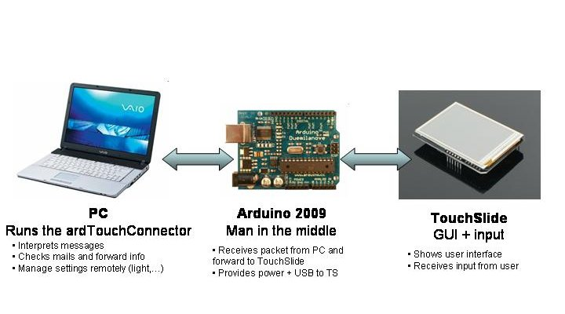

(back to the ardTouch main page)
ardTouch codes
Schema

Abbreviations I will use:
- TS : TouchShield from LiquidWare
- Ard2009 : Arduino Duemillanove (2009)
Summary
Like a iPh0ne/iP0d (no I don't have neither want one), the touch-sensitive display shows many buttons that when pressed, will send a message to the pc and do some action (run program, change volume, format hard-drive, ...). Each button on the display has a unique code associated that will be intepreted by the pc.
That project has 2 distincts sides :
- The ard2009/TS side : display, manage user interaction, basic functions...
- The PC side : read the serial port messages and make the according command (Windows C# .Net)
Communications
PC <-> Arduino 2009
Communication done by
ARCPO packages, both ways :
- When the PC sends a message : show new unread mail, change brightness,...
- When the Arduino notifies the PC of something : the key with code 'x' has been pressed
NB: for now, I limited the unique code of the "keys" on TS to be 1 char. Still gives 256 possibilities, but it's not that fantastic however. This is one thing that has high chance to change in the future.
Arduino 2009 <-> TouchSlide
Communication done by "simple" serial characters send/receive, both ways :
- When the arduino sends a message : it sends at least 3 chars coming from the PC (explanation here under), plus for instance the mail title. But it's the very basic serial communication.
- When the TS notifies the Arduino of something : serial send the key's code that has been pressed
Q: Why not implementing also the
ARCPO packages stuff between Ard2009 and TS ?
A: Because for now that library uses the
Serial object, but between the Ard2009 and the TS it is
Software serial ! (ard2009 side at least). I need to rewrite this
and then I'll 100% sure implement it. But since for now there is no need, let's live like that some time...
The Arduino side
Code is very short and simple :
- when receive a message from PC, extract interresting stuff and forward to the TS Uses ARCPO library.
- when read a char from the TS, make a packet and send to PC
Ideally, the ard2009 could do more thing, like read the temperature, read buttons, make funky rgb mood color, ... but I have not implemented that yet. It is here for comfort and make future evolutions easy.
I develop it on the official Arduino software because it seems the gadget stuff don't work well on my pc. Except that, no mystical reason involved.
The TouchShield Slide side
The big part. It makes extensive use of the
TouchSlideExt library so check for this on that site.
The PC side
-> See
ardTouchConnector <-